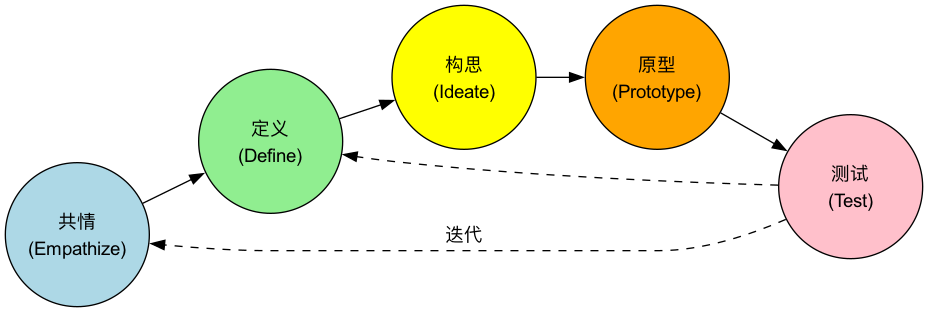

设计思维¶
我们如何才能创造出真正有意义、能深刻解决用户问题的创新产品和服务？很多时候，我们失败的原因，并非技术不够先进，而是因为我们从一开始，就爱上了自己的“解决方案”，却从未真正地理解用户的“问题”。设计思维（Design Thinking） 正是一套以人为本（Human-Centered）的、旨在解决复杂问题的系统性创新方法论。它并非设计师的专利，而是一种任何领域的团队都可以学习和应用的思维模式与工作流程。
设计思维的核心在于，它将创新的焦点，从“技术可行性”或“商业利益”前置到了“人的需求”上。它倡导，在思考解决方案之前，我们必须先通过共情（Empathy），深入地、设身处地地去理解我们的用户，洞察他们内心深处那些未被满足的需求和渴望。然后，通过一个发散与收敛交替的、动手实践的、快速迭代的过程，来探索、构建和测试创新的解决方案。它是一条从“理解人”到“服务人”的完整路径。
设计思维的五个阶段¶
斯坦福大学的设计学院（d.school）将设计思维的流程，经典地概括为以下五个非线性的、可迭代的阶段。

B(2. 定义清晰定义核心用户问题);
B --> C(3. 构思
自由发散，产生大量想法);
C --> D(4. 原型
动手实践，将想法变为现实);
D --> E(5. 测试
将原型呈现给用户，获得真实反馈);
E --> A;
E --> B;
E --> C;
end
```
* 这是一个迭代而非线性的过程：在测试阶段获得的反馈，可能会让你重新回到任何一个之前的阶段，去深化共情、重新定义问题或产生新的想法。
-
共情（Empathize）
- 目标：深入用户的世界，理解他们的所看、所听、所想、所感。你需要暂时放下自己的假设和偏见，以一个初学者的心态去观察和倾听。
- 常用工具：用户访谈、田野调查、参与式观察、同理心地图。
-
定义（Define）
- 目标：将你在共情阶段收集到的所有零散的、定性的洞察，进行综合与提炼，最终形成一个清晰、有启发性、可操作的核心问题陈述（Point of View, POV）。
- 一个好的问题陈述通常遵循格式：“[用户] 需要 [用户的需求]，因为 [令人惊讶的洞察]。”
-
构思（Ideate）
- 目标：针对定义好的核心问题，进行一次“广度优先”的、发散性的创意生成。在这一阶段，数量远比质量重要。
- 常用工具：头脑风暴、逆向头脑风暴、思维导图、类比思考等。
-
原型（Prototype）
- 目标：将构思阶段产生的抽象想法，快速地转化为可触摸、可感知的、低成本的实体模型。原型的目的不是为了完美，而是为了将想法具象化，以便进行快速的测试和学习。
- 原型可以是任何东西：一个用纸和笔画出的App界面、一个用乐高积木搭建的产品模型、一段模拟服务流程的角色扮演，或是一个简单的故事板。
-
测试（Test）
- 目标：将你的低保真原型，拿给真实的用户去互动和体验，并仔细观察他们的反应、收集他们的反馈。测试的核心理念是“带着要学习的东西去展示，而不是去展示已经完成的东西”。
- 通过测试，你可以验证你的解决方案是否可行，发现哪些地方需要改进，甚至可能获得对用户和问题全新的、更深的理解，从而驱动下一轮的迭代。
应用案例¶
案例一：IDEO为Gatorade（佳得乐）重新设计运动饮料瓶
- 共情：IDEO的设计团队没有直接开始设计瓶子，而是去和大量的运动员（从专业橄榄球运动员到业余爱好者）一起训练。他们观察到，在精疲力竭、满头大汗时，运动员很难用湿滑的手拧开传统的圆形瓶盖。
- 定义：核心问题是：“精疲力竭的运动员，需要一种能单手、快速、毫不费力地打开并饮用的方式，因为在激烈的运动中，每一秒的补水时机都至关重要。”
- 构思与原型：团队制作了数十种不同形状、不同材质的瓶盖和瓶身原型。
- 测试：他们将这些原型带回训练场，让运动员在真实的运动场景中进行测试。
- 最终产品：最终诞生了佳得乐标志性的、带有黑色防滑条纹和单向阀瓶盖的“Gatorade Edge”瓶。这个设计大获成功，因为它完美地解决了在真实场景中发现的用户痛点。
案例二：Airbnb的早期转型故事
- 问题：在创业初期，Airbnb在纽约的业务增长停滞不前。他们发现，虽然网站上有房源，但预定量极低。
- 共情：创始人亲自飞到纽约，挨家挨户地拜访他们的房东。他们发现，房东们用手机拍摄的房源照片质量普遍很差——光线昏暗、角度随意，完全无法展现出房间的吸引力。
- 定义：“潜在的旅行者，需要通过高质量、有吸引力的照片来建立对陌生房源的信任感，因为他们无法在预定前亲眼看到房间。”
- 原型与测试（一个大胆的实验）：创始人租了一台专业的相机，亲自上门为纽约的所有房东免费拍摄了一套高质量的房源照片。这是一个完全不具规模化、但能快速验证假设的“原型”。
- 结果：一周之内，这些拥有了专业照片的房源，其预定量翻了一倍。这次基于共情的洞察和快速实验，成为了Airbnb发展历史上的一个关键转折点。
案例三：为儿童设计更好的MRI（核磁共振）体验
- 问题：GE医疗的设计师发现，很多儿童在接受MRI检查时，会因为对巨大、嘈杂的机器感到恐惧而哭闹不止，导致检查无法进行，甚至需要使用镇静剂。
- 共情：设计师花大量时间在医院里观察儿童和他们的父母，感受他们的焦虑和恐惧。
- 重新定义问题：问题不是“如何设计一台更漂亮的MRI机器”，而是“我们如何能将一次可怕的医疗检查，转变为一次有趣的冒险体验？”
- 解决方案：他们将整个MRI检查室，重新设计成了一个“海盗船”或“宇宙飞船”的主题。孩子们被告知，他们将要进入一艘飞船进行一次太空探险，而检查过程中发出的巨大噪音，就是飞船进入超光速模式的声音。这个名为“Adventure Series”的设计，极大地降低了儿童的恐惧，显著减少了镇静剂的使用率。
设计思维的优势与挑战¶
核心优势
- 降低创新风险：通过在项目早期就深入理解用户并进行快速、低成本的测试，极大地降低了开发出无人问津产品的风险。
- 产生突破性创新：通过聚焦于深层的用户需求而非现有的解决方案，更有可能产生颠覆性的、开创性的想法。
- 提升团队协作与创造力：其协作式、动手实践的特性，能够打破部门壁垒，激发团队的集体智慧和创造性自信。
潜在挑战
- 难以解决“不存在”的问题：设计思维非常擅长改进现有的体验，但对于那些用户自己都完全没有意识到的、开创性的技术突破（例如第一代iPhone），其适用性可能有限。
- 需要文化支持：它要求组织能够容忍模糊性、拥抱实验和失败，这与许多传统企业的文化相悖。
- 并非线性流程：对于习惯了清晰、线性流程的团队，可能会对设计思维中那种“混乱”的、反复迭代的过程感到不适应。
延伸与关联¶
- 精益创业（The Lean Startup）：设计思维与精益创业在理念上高度互补。设计思维的“原型-测试”循环，与精益创业的“构建-测量-学习”循环异曲同工。通常，可以用设计思维来确保你正在“正确地开发产品（doing the thing right）”，用精益创业来确保你正在“开发正确的产品（doing the right thing）”。
- 敏捷开发（Agile）：设计思维是敏捷开发前端——“我们应该开发什么？”——的绝佳搭档。通过设计思维产生的、经过验证的用户故事，可以直接进入敏捷团队的开发待办列表。
来源参考：设计思维的思想根源可以追溯到20世纪60年代的斯堪的纳维亚参与式设计运动。现代的设计思维方法论，主要由IDEO公司的创始人大卫·凯利（David Kelley）和蒂姆·布朗（Tim Brown），以及斯坦福大学的设计学院（d.school）共同推广和普及。蒂姆·布朗的著作《IDEO，设计改变一切》（Change by Design）是该领域的必读经典。